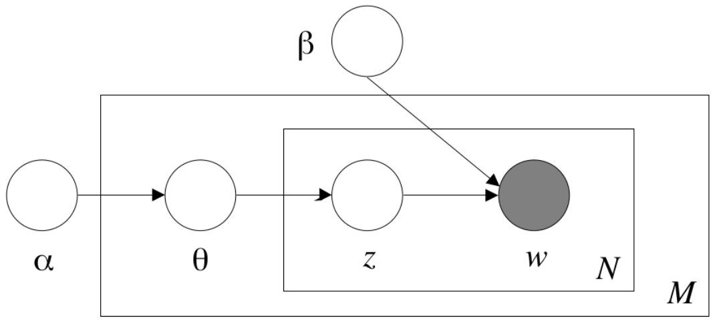
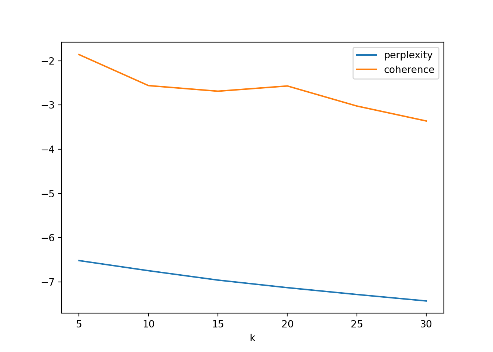

11 Automatic analysis of text
At the time of writing this chapter, quanteda and caret were our packages of choice for machine learning and text analysis in R, even though (as noted below) we felt that especially supervised text analysis was much better supported in Python than in R. We now think that the tidymodels and tidytext packages are a better choice for text analysis, especially for students who have just learned to work with the tidyverse data wrangling package. For this reason, we are planning to rewrite this chapter using those packages. See the draft updated version of this chapter and/or the relevant github issues for tidytext and tidymodels for more information.
Abstract. In this chapter, we discuss different approaches to the automatic analysis of text; or automated content analysis. We combine techniques from earlier chapters, such as transforming texts into a matrix of term frequencies and machine learning. In particular, we describe three different approaches (dictionary-based analyses, supervised machine learning, unsupervised machine learning). The chapter provides guidance on how to conduct such analyses, and also on how to decide which of the approaches is most suitable for which types of question.
Keywords. dictionary approaches, supervised machine learning, unsupervised machine learning, topic models, automated content analysis, sentiment analysis
Objectives:
- Understand different approaches to automatic analysis of text
- Be able to decide on whether to use a dictionary approach, supervised machine learning, or unsupervised machine learning
- Be able to use these techniques
In earlier chapters, you learned about both supervised and unsupervised machine learning as well about dealing with texts. This chapter brings together these elements and discusses how to combine them to automatically analyze large corpora of texts. After presenting guidelines for choosing an appropriate approach in Section 11.1 and downloading an example dataset in Section 11.2, we discuss multiple techniques in detail. We begin with a very simple top-down approach in Section 11.3, in which we count occurrences of words from an a priori defined list of words. In Section 11.4, we still use pre-defined categories that we want to code, but let the machine “learn” the rules of the coding itself. Finally, in Section 11.5, we employ a bottom-up approach in which we do not use any a priori defined lists or coding schemes, but inductively extract topics from our data.
11.1 Deciding on the Right Method
When thinking about the computational analysis of texts, it is important to realize that there is no method that is the one to do so. While there are good choices and bad choices, we also cannot say that one method is necessarily and always superior to another. Some methods are more fashionable than others. For instance, there has been a growing interest in topic models (see Section 11.5) in the past few years. There are indeed very good applications for such models, they are also sometimes applied to research questions and/or data where they make much less sense. As always, the choice of method should follow the research question and not the other way round. We therefore caution you about reading Chapter 11 selectively because you want, for instance, to learn about supervised machine learning or about unsupervised topic models. Instead, you should be aware of very different approaches to make an informed decision on what to use when.
Boumans and Trilling (2016) provide useful guidelines for this. They place automatic text analysis approaches on a continuum from deductive (or top-down) to inductive (or bottom-up). At the deductive end of the spectrum, they place dictionary approaches (Section 11.3). Here, the researcher has strong a priori (theoretical) assumptions (for instance, which topics exist in a news data set; or which words are positive or negative) and can compile lists of words or rules based on these assumptions. The computer then only needs to execute these rules. At the inductive end of the spectrum, in contrast, lie approaches such as topic models (Section 11.5) where little or no a priori assumptions are made, and where we exploratively look for patterns in the data. Here, we typically do not know which topics exist in advance. Supervised approaches (Section 11.4) can be placed in between: here, we do define categories a priori (we do know which topics exist, and given an article, we know to which topic it belongs), but we do not have any set of rules: we do not know which words to look for or which exact rules to follow. These rules are to be “learned” by the computer from the data.
Before we get into the details and implementations, let us discuss some use cases of the three main approaches for the computational analysis of text: dictionary (or rule-based) approaches, supervised machine learning, and unsupervised machine learning.
Dictionary approaches excel under three conditions. First, the variable we want to code is manifest and concrete rather than latent and abstract: names of actors, specific physical objects, specific phrases, etc., rather than feelings, frames, or topics. Second, all synonyms to be included must be known beforehand. And third, the dictionary entries must not have multiple meanings. For instance, coding for how often gun control is mentioned in political speeches fits these criteria. There are only so many ways to talk about it, and it is rather unlikely that speeches about other topics contain a phrase like “gun control”. Similarly, if we want to find references to Angela Merkel, Donald Trump, or any other well-known politician, we can just directly search for their names – even though problems arise when people have very common surnames and are referred to by their surnames only.
Sadly, most interesting concepts are more complex to code. Take a seemingly straightforward problem: distinguishing whether a news article is about the economy or not. This is really easy to do for humans: there may be some edge cases, but in general, people rarely need longer than a few seconds to grasp whether an article is about the economy rather than about sports, culture, etc. Yet, many of these articles won’t directly state that they are about the economy by explicitly using the word “economy”.
We may think of extending our dictionary not only with econom.+ (a regular expression that includes economists, economic, and so on), but also come up with other words like “stock exchange”, “market”, “company.” Unfortunately, we will quickly run into a problem that we also faced when we discussed the precision-recall trade-off in Section 8.5: the more terms we add to our dictionary, the more false positives we will get: articles about the geographical space called “market”, about some celebrity being seen in “company” of someone else, and so on.
From this example, we can conclude that often (1) it is easy for humans to decide to which class a text belongs, but (2) it is very hard for humans to come up with a list of words (or rules) on which their judgment is based. Such a situation is perfect for applying supervised machine learning: after all, it won’t take us much time to annotate, say, 1000 articles based on whether they are about the economy or not (probably this takes less time than thoroughly fine tuning a list of words to include or exclude); and the difficult part, deciding on the exact rules underlying the decision to classify an article as economic is done by the computer in seconds. Supervised machine learning, therefore, has replaced dictionary approaches in many areas.
Both dictionary (or rule-based) approaches and supervised machine learning assume that you know in advance which categories (positive versus negative; sports versus economy versus politics; …) exist. The big strength of unsupervised approaches such as topic models is that you can also apply them without this knowledge. They therefore allow you to find patterns in data that you did not expect and can generate new insights. This makes them particularly suitable for explorative research questions. Using them for confirmatory tests, in contrast, is less defensible: after all, if we are interested in knowing whether, say, news site A published more about the economy than news site B, then it would be a bit weird to pretend not to know that the topic “economy” exists. Also practically, mapping the resulting topics that the topic model produces onto such a priori existing categories can be challenging.
Despite all differences, all approaches share one requirement: you need to “Validate. Validate. Validate” (Grimmer and Stewart 2013). Though it has been done in the past, simply applying a dictionary without comparing the performance to manual coding of the same concepts is not acceptable; neither is using a supervised machine learning classifier without doing the same; or blindly trusting a topic model without at least manually checking whether the scores the model assigns to documents really capture what the documents are about.
11.2 Obtaining a Review Dataset
For the sections on dictionary and supervised approaches we will use a dataset of movie reviews from the IMDB database (Maas et al. 2011). This dataset is published as a compressed set of folders, with separate folders for the train and test datasets and subfolders for positive and negative reviews. Lots of other review datasets are available online, for example for Amazon review data (jmcauley.ucsd.edu/data/amazon/).
The IMDB dataset we will use is a relatively large file and it requires bit of processing, so it is smart to cache the data rather than downloading and processing it every time you need it. This is done in Example 11.1, which also serves as a nice example of how to download and process files. Both R and Python follow the same basic pattern. First, we check whether the cached file exists, and if it does we read the data from that file. For R, we use the standard RDS format, while for Python we use a compressed pickle file. The format of the data is also slightly different, following the convention for each language: In R we use the data frame returned by readtext, which can read files from a folder or zip archive and return a data frame containing one text per row. In Python, we have separate lists for the train and test datasets and for the full texts and labels: text_train are the training texts and y_train are the corresponding labels.
If the cached data file does not exist yet, the file is downloaded from the Internet. In R, we then extract the file and call readtext on the resulting folder. This automatically creates columns for the subfolders, so in this case for the dataset and label. After this, we remove the download file and the extracted folder, clean up the reviewdata, and save it to the reviewdata.rds file. In Python, we can extract files from the downloaded file directly, so we do not need to explicitly extract it. We loop over all files in the archive, and use a regular expression to select only text files and extract the label and dataset name (see Section 9.2 for more information about regular expressions). Then, we extract the text from the archive, and add the text and the label to the appropriate list. Finally, the data is saved as a compressed pickle file, so the next time we run this cell it does not need to download the file again.
11.3 Dictionary Approaches to Text Analysis
A straightforward way to automatically analyze text is to compile a list of terms you are interested in and simply count how often they occur in each document. For example, if you are interested in finding out whether mentions of political parties in news articles change over the years, you only need to compile a list of all party names and write a small script to count them.
Historically, this is how sentiment analysis was done. Example 11.2 shows how to do a simple sentiment analysis based on a list of positive and negative words. The logic is straightforward: you count how often each positive word occurs in a text, you do the same for the negative words, and then determine which occur more often.
As you may already realize, there are a lot of downsides to this approach. Most notably, our bag-of-words approach does not allow us to account for negation: “not good” will be counted as positive. Relatedly, we cannot handle modifiers such as “very good”. Also, all words are either positive or negative, while “great” should be more positive than “good”. More advanced dictionary-based sentiment analysis packages like Vader (Hutto and Gilbert 2014) or SentiStrength (Thelwall, Buckley, and Paltoglou 2012) include such functionalities. Yet, as we will discuss in Section 11.4, also these off-the-shelf packages perform very poorly in many sentiment analysis tasks, especially outside of the domains they were developed for. Dictionary-based sentiment analysis has been shown to be problematic when analyzing news content [e.g. Gonzalez-Bailon and Paltoglou (2015);@ Boukes2019]. They are problematic when accuracy at the sentence level is important, but may be satisfactory with longer texts for comparatively easy tasks such as movie review classification (Reagan et al. 2017), where there is clear ground truth data and the genre convention implies that the whole text is evaluative and evaluates one object (the film).
Still, there are many use cases where dictionary approaches work very well. Because your list of words can contain anything, not just positive or negative words, dictionary approaches have been used, for instance, to measure the use of racist words or swearwords in online fora (e.g., Tulkens et al. 2016). Dictionary approaches are simple to understand and straightforward, which can be a good argument for using them when it is important that the method is no black-box but fully transparent even without technical knowledge. Especially when the dictionary already exists or is easy to create, it is also a very cheap method. However, this is at the expense of their limitation to only performing well when measuring easy to operationalize concepts. To put it bluntly: it’s great for measuring the visibility of parties or organizations in the news, but it’s not good for measuring concepts such as emotions or frames.
What gave dictionary approaches a bit of a bad name is that many researchers applied them without validating them. This is especially problematic when a dictionary is applied in a slightly different domain than that for which it was originally made.
If you want to use a dictionary-based approach, we advise the following procedure:
- Construct a dictionary based on theoretical considerations and by closely reading a sample of example texts.
- Code some articles manually and compare with the automated coding.
- Improve your dictionary and check again.
- Manually code a validation dataset of sufficient size. The required size depends a bit on how balanced your data is – if one code occurs very infrequently, you will need more data.
- Calculate the agreement. You could use standard intercoder reliability measures used in manual content analysis, but we would also advise you to calculate precision and recall (see Section 8.5).
Very extensive dictionaries will have a high recall (it becomes increasingly unlikely that you “miss” a relevant document), but often suffer from low precision (more documents will contain one of the words even though they are irrelevant). Vice versa, a very short dictionary will often be very precise, but miss a lot of documents. It depends on your research question where the right balance lies, but to substantially interpret your results, you need to be able to quantify the performance of your dictionary-based approach.
11.4 Supervised Text Analysis: Automatic Classification and Sentiment Analysis
For many applications, there are good reasons to use the dictionary approach presented in the previous section. First, it is intuitively understandable and results can – in principle – even be verified by hand, which can be an advantage when transparency or communicability is of high importance. Second, it is very easy to use. But as we have discussed in Section 11.1, dictionary approaches in general perform less well the more abstract, non-manifest, or complex a concept becomes. In the next section, we will make the case that topics, but also sentiment, in fact, are quite a complex concepts that are often hard to capture with dictionaries (or at least, crafting a custom dictionary would be difficult). For instance, while “positive” and “negative” seem straightforward categories at first sight, the more we think about it, the more apparent it becomes how context-dependent it actually is: in a dataset about the economy and stock market returns, “increasing” may indicate something positive, in a dataset about unemployment rates the same word would be something negative. Thus, machine learning can be a more appropriate technique for such tasks.
11.4.1 Putting Together a Workflow
With the knowledge we gained in previous chapters, it is not difficult to set up a supervised machine learning classifier to automatically determine, for instance, the topic of a news article.
Let us recap the building blocks that we need. In Chapter 8, you learned how to use different classifiers, how to evaluate them, and how to choose the best settings. However, in these examples, we used numerical data as features; now, we have text. In Chapter 10, you learned how to turn text into numerical features. And that’s all we need to get started!
Typical examples for supervised machine learning in the analysis of communication include the classification of topics (e.g., Scharkow 2011), frames (e.g., Burscher et al. 2014), user characteristics such as gender or ideology, or sentiment.
Let us consider the case of sentiment analysis in more detail. Classical sentiment analysis is done with a dictionary approach: you take a list of positive words, a list of negative words, and count which occur more frequently. Additionally, one may attach a weight to each word, such that “perfect” gets a higher weight than “good”, for instance. An obvious drawback is that these pure bag-of-words approaches cannot cope with negation (“not good”) and intensifiers (“very good”), which is why extensions have been developed that take these (and other features, such as punctuation) into account (Thelwall, Buckley, and Paltoglou 2012; Hutto and Gilbert 2014; De Smedt, Daelemans, and Smedt 2012).
But while available off-the-shelf packages that implement these extended dictionary-based methods are very easy to use (in fact, they spit out a sentiment score with one single line of code), it is questionable how well they work in practice. After all, “sentiment” is not exactly a clear, manifest concept for which we can enumerate a list of words. It has been shown that results obtained with multiple of these packages correlate very poorly with each other and with human annotations (Boukes et al. 2019; Chan et al. in press).
Consequently, it has been suggested that it is better to use supervised machine learning to automatically code the sentiment of texts (Gonzalez-Bailon and Paltoglou 2015; Vermeer et al. 2019). However, you may need to annotate documents from your own dataset: training a classifier on, for instance, movie reviews and then using it to predict sentiment in political texts violates the assumption that training set, test set, and the unlabeled data that are to be classified are (at least in principle and approximately) drawn from the same population.
To illustrate the workflow, we will use the ACL IMDB dataset, a large dataset that consists of a training dataset of 25000 movie reviews (of which 12500 are positive and 12500 are negative) and an equally sized test dataset (Maas et al. 2011). It can be downloaded at ai.stanford.edu/~amaas/data/sentiment/aclImdb_v1.tar.gz
These data do not come in one file, but rather in a set of text files that are sorted in different folders named after the dataset to which they belong (test or train) and their label (pos and neg). This means that we cannot simply use a pre-defined function to read them, but we need to think of a way of reading the content into a data structure that we can use. This data was loaded in Example 11.1 above.
Let us now train our first classifier. We choose a Naïve Bayes classifier with a simple count vectorizer (Example 11.3). In the Python example, pay attention to the fitting of the vectorizer: we fit on the training data and transform the training data with it, but we only transform the test data without re-fitting the vectorizer. Fitting, here, includes the decision about which words to include (by definition, words that are not present in the training data are not included; but we could also choose additional constraints, such as excluding very rare or very common words), but also assigning an (internally used) identifier (variable name) to each word. If we fit the classifier again, these would not be compatible any more. In R, the same is achieved in a slightly different way: two term-document matrices are created independently, before they are matched in such a way that only the features that are present in the training matrix are retained in the test matrix.
We do not necessarily expect this first model to be the best classifier we can come up with, but it provides us with a reasonable baseline. In fact, even without any further adjustments, it works reasonably well: precision is higher for positive reviews and recall is higher for negative reviews (classifying a positive review as negative happens twice as much as the reverse), but none of the values is concerningly low.
11.4.2 Finding the Best Classifier
Let us start by comparing the two simple classifiers we know (Naïve Bayes and Logistic Regression (see Section 8.3) and the two vectorizers that transform our texts into two numerical representations that we know: word counts and tf.idf scores (see Chapter 10).
We can also tune some things in the vectorizer, such as filtering out stopwords, or specifying a minimum number (or proportion) of documents in which a word needs to occur in order to be included, or the maximum number (or proportion) of documents in which it is allowed to occur. For instance, it could make sense to say that a word that occurs in less than \(n=5\) documents is probably a spelling mistake or so unusual that it just unnecessarily bloats our feature matrix; and on the other hand, a word that is so common that it occurs in more than 50% of all documents is so common that it does not help us to distinguish between different classes.
We can try all of these things out by hand by just re-running the code from Example 11.3 and only changing the line in which the vectorizer is specified and the line in which the classifier is specified. However, copy-pasting essentially the same code is generally not a good idea, as it makes your code unnecessary long and increases the likelihood of errors creeping in when you, for instance, need to apply the same changes to multiple copies of the code. A more elegant approach is outlined in Example 11.4: We define a function that gives us a short summary of only the output we are interested in, and then use a for-loop to iterate over all configurations we want to evaluate, fit them and call the function we defined before. In fact, with 23 lines of code, we manage to compare four different models, while we already needed 15 lines (in Example 11.3) to evaluate only one model.
The output of this little example already gives us quite a bit of insight into how to tackle our specific classification tasks: first, we see that a \(tf\cdot idf\) classifier seems to be slightly but consistently superior to a count classifier (this is often, but not always the case). Second, we see that the logistic regression performs better than the Naïve Bayes classifier (again, this is often, but not always, the case). In particular, in our case, the logistic regression improved on the excessive misclassification of positive reviews as negative, and achieves a very balanced performance.
There may be instances where one nevertheless may want to use a Count Vectorizer with a Naïve Bayes classifier instead (especially if it is too computationally expensive to estimate the other model), but for now, we may settle on the best performing combination, logistic regression with a tf.idf vectorizer. You could also try fitting a Support Vector Machine instead, but we have little reason to believe that our data isn’t linearly separable, which means that there is little reason to believe that the SVM will perform better. Given the good performance we already achieved, we decide to stick to the logistic regression for now.
We can now go as far as we like, include more models, use crossvalidation and gridsearch (see Section 8.5.3), etc. However, our workflow now consists of two steps: fitting/transforming our input data using a vectorizer, and fitting a classifier. To make things easier, in scikit-learn, both steps can be combined into a so-called pipe. Example 11.5 shows how the loop in Example 11.4 can be re-written using pipes (the result stays the same).
Such a pipeline lends itself very well to performing a gridsearch. Example 11.6 gives you an example. With LogisticRegression? and TfIdfVectorizer?, we can get a list of all possible hyperparameters that we may want to tune. For instance, these could be the minimum and maximum frequency for words to be included or whether we want to use only unigrams (single words) or also bigrams (combinations of two words, see Section 10.3). For the Logistic Regression, it may be the regularization hyperparameter C, which applies a penalty for too complex models. We can put all values for these parameters that we want to consider in a dictionary, with a descriptive key (i.e., a string with the step of the pipeline followed by two underscores and the name of the hyperparameter) and a list of all values we want to consider as the corresponding value.
The gridsearch procedure will then estimate all combinations of all values, using cross-validation (see Section 8.5). In our example, we have \(2 x 2 x 2 x 2 x 3 = 24\) different models, and \(24 models x 5 folds = 120\) models to estimate. Hence, it may take you some time to run the code.
We see that we could further improve our model to precision and recall values of 0.90, by excluding extremely infrequent and extremely frequent words, including both unigrams and bigrams (which, we may speculate, help us to account for the “not good” versus “not”, “good” problem), and changing the default penalty of \(C=1\) to \(C=100\).
Let us, just for the sake of it, compare the performance of our model with an off-the-shelf sentiment analysis package, in this case Vader (Hutto and Gilbert 2014). For any text, it will directly estimate sentiment scores (more specifically, a positivity score, a negativity score, a neutrality score, and a compound measure that combines them), without any need to have training data. However, as Example 11.7 shows, such a method is clearly inferior to a supervised machine learning approach. While in almost all cases (except for \(n=11\) cases), Vader was able to make a choice (getting scores of 0 is a notorious problem in very short texts), precision and recall are clearly worse than even the simple baseline model we started with, and much worse than those of the final model we finished with. In fact, we miss half (!) of the negative reviews. There are probably very few applications in the analysis of communication in which we would find this acceptable. It is important to highlight that this is not because the off-the-shelf package we chose is a particularly bad one (on the contrary, it is actually comparatively good), but because of the inherent limitations of dictionary-based sentiment analysis.
We need to keep in mind, though, that with this dataset, we chose one of the easiest sentiment analysis tasks: a set of long, rather formal texts (compared to informal short social media messages), that evaluate exactly one entity (one film), and that are not ambiguous at all. Many applications that communication scientists are interested in are much less straightforward. Therefore, however tempting it may be to use an off-the-shelf package, doing so requires a thorough test based on at least some human-annotated data.
11.4.3 Using the Model
So far, we have focused on training and evaluating models, almost forgetting why we were doing this in the first place: to use them to predict the label for new data that we did not annotate.
Of course, we could always re-train the model when we need to use it – but that has two downsides: first, as you may have seen, it may actually take considerable time to train it, and second, you need to have the training data available, which may be a problem both in terms of storage space and of copyright and/or privacy if you want to share your classifier with others.
Therefore, it makes sense to save both our classifier and our vectorizer to a file, so that we can reload them later (Example 11.8). Keep in mind that you have to re-use both – after all, the columns of your feature matrix will be different (and hence, completely useless for the classifier) when fitting a new vectorizer. Therefore, as you see, you do not do any fitting any longer, and only use the .transform() method of the (already fitted) vectorizer and the .predict() method of the (already fitted) classifier.
In R, you have no vectorizer you could save – but because in contrast to Python, both your DTM and your classifier include the feature names, it suffices to save the classifier only (using saveRDS(myclassifier, "myclassifier.rds")) and using on a new DTM later on. You do need to remember, though, how you constructed the DTM (e.g., which preprocessing steps you took), to make sure that the features are comparable.
Another thing that we might want to do is to get a better idea of the features that the model uses to arrive at its prediction; in our example, what actually characterizes the best and the worst reviews. Example 11.9 shows how this can be done in one line of code using eli5 – a package that aims to “explain [the model] like I’m 5 years old”. Here, we re-use the pipe we constructed earlier to provide both the vectorizer and the classifier to eli5 – if we had only provided the classifier, then the feature names would have been internal identifiers (which are meaningless to us) rather than human-readable words.
We can also use eli5 to explain how the classifier arrived at a prediction for a specific document, by using different shades of green and red to explain how much different features contributed to the classification, and in which direction (Example 11.10).
11.4.4 Deep Learning
Deep learning models were introduced in Section 11.4.4 as a (relatively) new class of models in supervised machine learning. Using the Python keras package you can define various model architectures such as Convolutional or Recurrent Neural Networks. Although it is beyond the scope of this chapter to give a detailed treatment of building and training deep learning models, in this section we do give an example of using a Convolutional Neural Network using pre-trained word embeddings. We would urge anyone who is interested in machine learning for text analysis to continue studying deep learning, probably starting with the excellent book by Goldberg (2017).
Impressively, in R you can now also use the keras package to train deep learning models, as shown in the example. Similar to how spacyr works (Section 10.3.4), the R package actually installs and calls Python behind the screens using the reticulate package. Although the resulting models are relatively similar, it is less easy to build and debug the models in R because most of the documentation and community examples are written in Python. Thus in the end, we probably recommend people who want to dive into deep learning should choose Python rather than R.
First, Example 11.11 loads a dataset described by Van Atteveldt, Van der Velden, and Boukes (2021), which consists of Dutch economic news headlines with a sentiment value. Next, in Example 11.12 a model is defined consisting of several layers, corresponding roughly to Figure 8.7. First, an embedding layer transforms the textual input into a semantic vector for each word. Next, the convolutional layer defines features (filters) over windows of vectors, which are then pooled in the max-pooling layer. This results in a vector of detected features for each document, which are then used in a regular (hidden) dense layer followed by an output layer.
Finally, in Example 11.13 we train the model on 4000 documents and test it against the remaining documents. The Python model, which uses pre-trained word embeddings (the w2v_320d file downloaded at the top), achieves a mediocre accuracy of about 56% (probably due to the low number of training sentences). The R model, which trains the embedding layer as part of the model, performs more poorly at 44% as this model is even more dependent on large training data to properly estimate the embedding layer.
11.5 Unsupervised Text Analysis: Topic Modeling
In Section 7.3, we discussed how clustering techniques can be used to find patterns in data, such as which cases or respondents are most similar. Similarly, especially in survey research it is common to use factor analysis to discover (or confirm) variables that form a scale.
In essence, the idea behind these techniques is similar: by understanding the regularities in the data (which cases or variables behave similarly), you can describe the relevant information in the data with fewer data points. Moreover, assuming that the regularities capture interesting information and the deviations from these regularities are mostly uninteresting noise, these clusters of cases or variables can actually be substantively informative.
Since a document-term matrix (DTM) is “just” a matrix, you can also apply these clustering techniques to the DTM to find groups of words or documents. You can therefore use any of the techniques we described in Chapter 7, and in particular clustering techniques such as \(k\)-means clustering (see Section 7.3) to group documents that use similar words together.
It can be very instructive to do this, and we encourage you to play around with such techniques. However, in recent years, a set of models called topic models have become especially popular for the unsupervised analysis of texts. Very much what like what you would do with other unsupervised techniques, also in topic modeling, you group words and documents into “topics”, consisting of words and documents that co-vary. If you see the word “agriculture” in a news article, there is a good chance you might find words such as “farm” or “cattle”, and there is a lower chance you will find a word like “soldier”. In other words, the words “agriculture” and “farm” generally occur in the same kind of documents, so they can be said to be part of the same topic. Similarly, two documents that share a lot of words are probably about the same topic, and if you know what topic a document is on (e.g., an agricultural topic), you are better able to guess what words might occur in that document (e.g., “cattle”).
Thus, we can formulate the goal of topic modeling as: given a corpus, find a set of \(n\) topics, consisting of specific words and/or documents, that minimize the mistakes we would make if we try to reconstruct the corpus from the topics. This is similar to regression where we try to find a line that minimizes the prediction error.
In early research on document clustering, a technique called Latent Semantic Analysis (LSA) essentially used a factor analysis technique called Singular Value Decomposition (see Section 7.3.3) on the DTM. This has yielded promising results in information retrieval (i.e., document search) and studying human memory and language use. However, it has a number of drawbacks including factor loadings that can be difficult to interpret substantively and is not a good way of dealing with words that can have multiple meanings (Landauer et al. 2013).
11.5.1 Latent Dirichlet Allocation (LDA)
The most widely used technique for topic modeling is Latent Dirichlet Allocation (LDA, D. M. Blei, Ng, and Jordan 2003). Although the goal of LDA is the same as for clustering techniques, it starts from the other end with what is called a generative model. A generative model is a (simplified) formal model of how the data is assumed to have been generated. For example, if we would have a standard regression model predicting income based on age and education level, the implicit generative model is that to determine someone’s income, you take their age and education level, multiply them both by their regression parameters, and then add the intercept and some random error. Of course, we know that’s not actually how most companies determine wages, but it can be a useful starting point to analyze, e.g., labor market discrimination.
The generative model behind LDA works as follows. Assume that you are a journalist writing a 500 word news item. First, you would choose one or more topics to write about, for example 70% healthcare and 30% economy. Next, for each word in the item, you randomly pick one of these topics based on their respective weight. Finally, you pick a random word from the words associated with that topic, where again each word has a certain probability for that topic. For example, “hospital” might have a high probability for healthcare while “effectiveness” might have a lower probability but could still occur.
As said, we know (or at least strongly suspect) that this is not how journalists actually write their stories. However, this generative model helps understand the substantive interpretation of topics. Moreover, LDA is a mixture model, meaning it allows for each document to be about multiple topics, and for each word to occur in multiple topics. This matches with the fact that in many cases, our documents are in fact about multiple topics, from a news article about the economic effects of the COVID virus to an open survey answer containing multiple reasons for supporting a certain candidate. Additionally, since topic assignment is based on what other words occur in a document, the word “pupil” could be assigned either to a “biology” topic or to an “education” topic, depending on whether the document talks about eyes and lenses or about teachers and classrooms.

Figure 11.1 is a more formal notation of the same generative model. Starting from the left, for each document you pick a set of topics \(\Theta\). This set of topics is drawn from a Dirichlet distribution which itself has a parameter \(\alpha\) (see note). Next, for each word you select a single topic \(z\) from the topics in that document. Finally, you pick an actual word \(w\) from the words in that topic, again controlled by a parameter \(\beta\).
Now, if we know which words and documents are in which topics, we can start generating the documents in the corpus. In reality, of course, we have the reverse situation: we know the documents, and we want to know the topics. Thus, the task of LDA is to find the parameters that have the highest chance of generating these documents. Since only the word frequencies are observed, this is a latent variable model where we want to find the most likely values for the (latent) topic \(z\) for each word in each document.
Unfortunately, there is no simple analytic solution to calculate these topic assignments like there is for OLS regression. Thus, like other more complicated statistical models such as multilevel regression, we need to use an iterative estimation that progressively optimizes the assignment to improve the fit until it converges.
An estimation method that is often used for LDA is Gibbs sampling. Simply put, this starts with a random assignment of topics to words. Then, in each iteration, it reconsiders each word and recomputes what likely topics for that word are given the other topics in that document and the topics in which that word occurs in other documents. Thus, if a document already contains a number of words placed in a certain topic, a new word is more likely to be placed in that topic as well. After enough iterations, this converges to a solution.
11.5.2 Fitting an LDA Model
Example 11.14 shows how you can fit an LDA model in Python or R. As example data, we use Obama’s State of the Union Speeches using the corpus introduced in Chapter 10. Since such a speech generally touches on many different topics, we choose to first split by paragraph as these will be more semantically coherent (for Obama, at least). In R, we use the corpus_reshape function to split the paragraphs, while in Python we use pandas’ str.split, which creates a list or paragraphs for each text, which we then convert into a paragraph per row using explode. Converting this to a DTM we get a reasonably sized matrix of 738 paragraphs and 746 unique words.
Next, we fit the actual LDA model using the package gensim (Python) and topicmodels (R). Before we can do this, we need to convert the DTM format into a format accepted by that package. For Python, this is done using the Sparse2Corpus helper function while in R this is done with the quanteda convert function. Then, we fit the model, asking for 10 topics to be identified in these paragraphs. There are three things to note in this line. First, we specify a random seed of 123 to make sure the analysis is replicable. Second, we specify an “asymmetric” of 1/1:10, meaning the first topic has alpha 1, the second 0.5, etc. (in R). In Python, instead of using the default of alpha='symmetric', we set alpha='asymmetric', which uses the formula \(\frac{1}{topic\_index + \sqrt{num\_topics}}\) to determine the priors. At the cost of a longer estimation time, we can even specify alpha='auto', which will learn an asymmetric prior from the data. See the note on hyperparameters for more information. Third, for Python we also need to specify the vocabulary names since these are not included in the DTM.
The final line generates a data frame of top words per topic for first inspection (which in Python requires separating the words from their weights in a list comprehension and converting it to a data frame for easy viewing). As you can see, most topics are interpretable and somewhat coherent: for example, topic 1 seems to be about education and jobs, while topic 2 is health care. You also see that the word “job” occurs in multiple topics (presumably because unemployment was a pervasive concern during Obama’s tenure). Also, some topics like topic 3 are relatively more difficult to interpret from this table. A possible reason for this is that not every paragraph actually has policy content. For example, the first paragraph of his first State of the Union was: Madam Speaker, Mr. Vice President, Members of Congress, the First Lady of the United States – she’s around here somewhere. None of these words really fit a “topic” in the normal meaning of that term, but all of these words need to be assigned a topic in LDA. Thus, you often see “procedural” or “boilerplate” topics such as topic 3 occurring in LDA outputs.
Finally, note that we showed the R results here. As gensim uses a different estimation algorithm (and scikit-learnuses a different tokenizer and stopword list), results will not be identical, but should be mostly similar.
11.5.3 Analyzing Topic Model Results
Example 11.15 shows how you can combine the LDA results (topics per document) with the original document metadata. This could be your starting point for substantive analyses of the results, for example to investigate relations between topics or between, e.g., time or partisanship and topic use.
You can also use this to find specific documents for reading. For example, we noted above that topic 3 is difficult to interpret. As you can see in the table in Example 11.15 (which is sorted by value of topic 3), most of the high scoring documents are the first paragraph in each speech, which do indeed contain the “Madam speaker” boilerplate noted above. The other three documents are all calls for bipartisanship and support. As you can see from this example, carefully inspecting the top documents for each topic is very helpful for making sense of the results.
11.5.4 Validating and Inspecting Topic Models
As we saw in the previous subsection, running a topic model is relatively easy. However, that doesn’t mean that the resulting topic model will always be useful. As with all text analysis techniques, validation is the key to good analysis: are you measuring what you want to measure? And how do you know?
For topic modeling (and arguably for all text analysis), the first step after fitting a model is inspecting the results and establishing face validity. Top words per topic such as those listed above are a good place to start, but we would really encourage you to also look at the top documents per topic to better understand how words are used in context. Also, it is good to inspect the relationships between topics and look at documents that load high on multiple topics to understand the relationship.
If the only goal is to get an explorative understanding of the corpus, for example as a first step before doing a dictionary analysis or manual coding, just face validity is probably sufficient. For a more formal validation, however, it depends on the reason for using topic modeling.
If you are using topic modeling in a true unsupervised sense, i.e., without a predefined analytic schema in mind, it is difficult to assess whether the model measures what you want to measure – because the whole point is that you don’t know what you want to measure. That said, however, you can have the general criteria that the model needs to achieve coherence and interpretability, meaning that words and documents that share a topic are also similar semantically.
In their excellent paper on the topic, Chang et al. (2009) propose two formal tasks to judge this using manual (or crowd) coding: in word intrusion, a coder is asked to pick the “odd one out” from a list where one other word is mixed in a group of topic words. In topic intrusion, the coder is presented with a document and a set of topics that occur in the document, and is asked to spot the one topic that was not present according to the model. In both tasks, if the coder is unable to identify the intruding word or topic, apparently the model does not fit our intuitive notion of “aboutness” or semantic similarity. Perhaps their most interesting finding is that goodness-of-fit measures like perplexity1 are actually not good predictors of the interpretability of the resulting models.
If you are using topic models in a more confirmatory manner, that is, if you wish the topics to match some sort of predefined categorization, you should use regular gold standard techniques for validation: code a sufficiently large random sample of documents with your predefined categories, and test whether the LDA topics match those categories. In general, however, in such cases it is a better idea to use a dictionary or supervised analysis technique as topic models often do not exactly capture our categories. After all, unsupervised techniques mainly excel in bottom-up and explorative analyses (Section 11.1).
11.5.5 Beyond LDA
This chapter focused on regular or “vanilla” LDA topic modeling. Since the seminal publication, however, a large amount of variations and extensions on LDA have been proposed. These include, for example, Dynamic Topic Models (which incorporate time; D. M. Blei and Lafferty (2006)) and Correlated Topic Models (which explicitly model correlation between topics; D. Blei and Lafferty (2006)). Although it is beyond the scope of this book to describe these models in detail, the interested reader is encouraged to learn more about these models.
Especially noteworthy are Structural Topic Models (R package stm; Roberts et al. (2014)), which allow you to model covariates as topic or word predictors. This allows you, for example, to model topic shifts over time or different words for the same topic based on, e.g., Republican or Democrat presidents.
Python users should check out Hierarchical Topic Modeling (Griffiths et al. 2004). In hierarchical topic modeling, rather than the researcher specifying a fixed number of topics, the model returns a hierarchy of topics from few general topics to a large number of specific topics, allowing for a more flexible exploration and analysis of the data.
With topic modeling, the most important researcher choices are the number of topics and the value of alpha. These choices are called hyperparameters, since they determine how the model parameters (e.g. words per topic) are found.
There is no good theoretical solution to determine the “right” number of topics for a given corpus and research question. Thus, a sensible approach can be to ask the computer to try many models, and see which works best. Unfortunately, because this is an unsupervised (inductive) method, there is no single metric that determines how good a topic model is.
There are a number of such metrics proposed in the literature, of which we will introduce two. Perplexity is a score of how well the LDA model can fit (predict) the actual word distribution (or in other words: how “perplexed” the model is seeing the corpus). Coherence is a measure of how semantically coherent the topics are by checking how often the top token co-occurs in documents in each topic (Mimno et al. 2011).
The code below shows how these can be calculated for a range of topic counts, and the same code could be used for trying different values of alpha. For both measures, lower values are better, and both essentially keep decreasing as you add more topics. What you are looking for is the inflection point (or “elbow point”) where it goes from a steep decrease to a more gradual decrease. For coherence, this seems to be at 10 topics, while for perplexity this is at 20 topics.
There are two very important caveats to make here, however. First, these metrics are no substitute for human validation and the best model according to these metrics is not always the most interpretable or coherent model. In our experience, most metrics give a higher topic count that would be optimal from an interpretability perspective, but of course that also depends on how we operationalize interpretability. Nonetheless, these topic numbers are probably more indicative of a range of counts that should be inspected manually, rather than giving a definitive answer.
Second, the code below was written so it is easy to understand and quick to run. For real use in a research project, it is advised to include a broader range of topic counts and also vary the \(\alpha\). Moreover, it is smart to run each count multiple times so you get an indication of the variance as well as a single point (it is quite likely that the local minimum for coherence at \(k=10\) is an outlier that will disappear if more runs are averaged). Finally, especially for a goodness-of-fit measure like perplexity it is better to split the data into a training and test set (see Section 11.4.1 for more details).
result = []
for k in [5, 10, 15, 20, 25, 30]:
m = LdaModel(
corpus,
num_topics=k,
id2word=vocab,
random_state=123,
alpha="asymmetric",
)
perplexity = m.log_perplexity(corpus)
coherence = CoherenceModel(
model=m, corpus=corpus, coherence="u_mass"
).get_coherence()
result.append(dict(k=k, perplexity=perplexity, coherence=coherence))
result = pd.DataFrame(result)
result.plot(x="k", y=["perplexity", "coherence"])
plt.show()
results = list()
dtm = convert(dfm, to="topicmodels")
for (k in c(5, 10, 15, 20, 25, 30)) {
alpha = 1/((1:k)+sqrt(k))
lda = LDA(dtm,k=k,control=list(seed=99,alpha=alpha))
results[[as.character(k)]] = data.frame(
perplexity=perplexity(lda),
coherence=mean(topic_coherence(lda,dtm)))
}
bind_rows(results, .id="k") %>%
mutate(k=as.numeric(k)) %>%
pivot_longer(-k) %>%
ggplot() +
geom_line(aes(x=k, y=value)) +
xlab("Number of topics") +
facet_grid(name ~ ., scales="free")
Perplexity is a measure to compare and evaluate topic models using log-likelihood in order to estimate how well a model predicts a sample. See the note ‘how many topics’ below for example code on how to compute perplexity↩︎